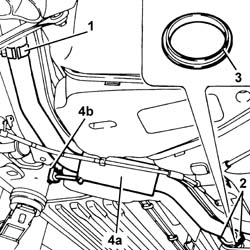
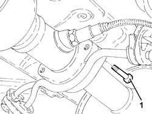
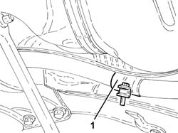
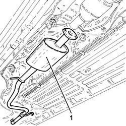

1076B26 intermediate exhaust silencer - r+r emission control versions
- Path
- Procedures > 10 ENGINE > 1076 EXHAUST PIPES AND SILENCERS > 1076B exhaust pipes and silencers > 1076B26 intermediate exhaust silencer - r+r emission control versions
- Kind
- repair procedure (removal / refitting; the operation number is the code)
- Applies to
- engines: 1.6 TS , 1.8 TS, 2.5 V6, 3.2 V6; all production periods
- Interactive page
- https://sloeber94.github.io/elrnDB-a156/en/#/3237570
Applies to: engines: 2.5 V6, 3.2 V6; all production periods
 Removing
Removing
 Refitting
RefittingPosition the vehicle on the ramp.
1. Loosen the collar fixing the rear exhaust silencer to the intermediate exhaust silencer.
2. Undo the bolts and disconnect the intermediate exhaust silencer from the catalytic converter.
3. Remove the gasket.
4. Remove the intermediate exhaust silencer (4a) after having released it from the flexible mounting (4b) and from the rear exhaust silencer.

Applies to: engines: 2.5 V6, 3.2 V6; all production periods
Refitting
RemovingPlace the intermediate exhaust silencer back in its housing, secure it using the flexible mounting and connect it to the rear exhaust silencer.
Place the gasket back in its housing, then connect the intermediat exhaust silencer to the catalytic converter and secure it by tightening the bolts to the recommended torque.
 | Fastening | Component | Ø | Value (daNm) |
|---|---|---|---|---|
- | - | - | - | - |
Tighten the collar fixing the rear exhaust silencer to the intermediate exhaust silencer.
Remove the vehicle from the ramp.
Applies to: engines: 1.6 TS , 1.8 TS; all production periods; only with equipment: Euro 3
Removing
RefittingPlace the car on ramps.
1. Undo the bolts fixing the catalytic converter to the intermediate exhaust silencer.

Applies to: engines: 1.6 TS , 1.8 TS; all production periods; only with equipment: Euro 3
1. Loosen the collar fixing the intermediate exhaust silencer to the rear exhaust silencer.

Applies to: engines: 1.6 TS , 1.8 TS; all production periods; only with equipment: Euro 3
1. Remove the intermediate exhaust silencer after having released it from the rear exhaust silencer.

Applies to: engines: 1.6 TS , 1.8 TS; all production periods; only with equipment: Euro 3
Refitting
RemovingPlace the rear exhaust silencer back in its housing and fix it to the flexible mountings.
Tighten the band securing the intermediate exhaust silencer to the rear exhaust silencer.
Tighten the bolts fixing the catalytic converter to the intermediate exhaust silencer to the recommended torque.
| Fastening | Component | Ø | Value (daNm) |
|---|---|---|---|---|
- | Bolt | CATALYTIC CONVERTER (ONE) | M8 | (Silencer side) 2.3 ÷ 2.8 |
Remove the car from the ramps.